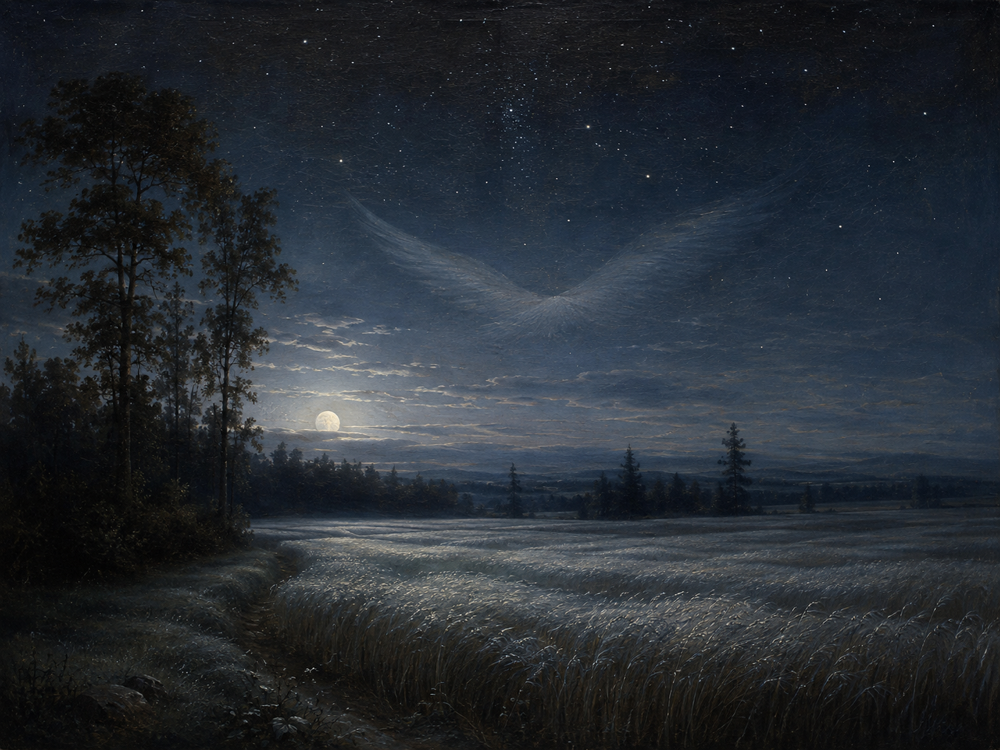

Es war, als hätt' der Himmel
"als hätte" 引导虚拟式二式从句，表示一种想象性的比拟（“仿佛……曾……”），并非真实发生的事件；hätt' 是 hätte 的省音形式。
月夜
自然抒情诗（Naturlyrik）
晚期浪漫主义 Spätromantik
约1835年作，1837年首次发表

图片由 AI 生成
Es war, als hätt' der Himmel
"als hätte" 引导虚拟式二式从句，表示一种想象性的比拟（“仿佛……曾……”），并非真实发生的事件；hätt' 是 hätte 的省音形式。
Die Erde still geküßt,
küssen 的过去分词 geküßt（现代拼写 geküsst），与 hätte 构成虚拟式过去时（Konjunktiv II der Vergangenheit），表达对一个假设性过去动作的描绘。
Von ihm nun träumen müßt'.
müßt' 是 müßte 的省音形式（müssen 的虚拟式二式），与上文 hätte 呼应，共同构成整节的虚拟式语气：天空与大地之间发生的一切都是诗人“仿佛觉得”的想象，而非陈述事实。
Die Ähren wogten sacht,
wogen（如波浪般起伏）本用于描写水面，此处转用于形容风中麦穗的摆动，是一种通感式的动词借用；sacht（轻柔地）是副词，修饰起伏的幅度与力度。
Und meine Seele spannte
从第三节起，视角由外部的天地风景转向诗人内心的 Seele（灵魂），是全诗结构上的关键转折——前两节的自然描写至此被揭示为灵魂“飞升”体验的铺垫。
Als flöge sie nach Haus.
"als flöge sie" 再次使用虚拟式二式（fliegen 的虚拟式二式 flöge），表比拟“仿佛飞向家园”；这里的“家”并非具体的地理位置，而多被解读为灵魂对宇宙、对神性本源的向往与回归。
| Infinitiv | Präsens 3. Sg. |
Präteritum | Perfekt | Partizip II | Konjunktiv II | Hilfsverb |
|---|---|---|---|---|---|---|
| küssen | küsst | küsste | hat geküsst | geküsst（旧拼: geküßt） | küsste | haben |
| ↳ 诗中用于虚拟式过去时 "hätte … geküßt"。 | ||||||
| müssen | muss | musste | hat gemusst | gemusst | müsste | haben |
| ↳ 诗中用省音形式 "müßt'"（= müßte = 现代 müsste）。 | ||||||
| wogen | wogt | wogte | hat gewogt | gewogt | wogte | haben |
| ↳ 诗中用简单过去式 "wogten"。 | ||||||
| ausspannen | spannt aus | spannte aus | hat ausgespannt | ausgespannt | spannte aus | haben |
| ↳ 可分动词，诗中为 "spannte … aus"（简单过去式，前缀置于句尾）。 | ||||||
| fliegen | fliegt | flog | ist geflogen | geflogen | flöge | sein |
| ↳ 诗中既有简单过去式 "Flog"，也有虚拟式二式 "flöge"（als flöge sie）。 | ||||||
Es war, als hätt' der Himmel / Die Erde still geküßt … Als flöge sie nach Haus.
geküßt, müßt', leis'
Und meine Seele spannte / Weit ihre Flügel aus,
全诗三节，每节四行，abab 交叉韵
《月夜》被广泛认为是艾兴多夫最杰出、也是德语浪漫主义自然抒情诗的巅峰之作。托马斯·曼（Thomas Mann）称其为“珍珠中的珍珠”（die Perle der Perlen），阿多诺（Theodor W. Adorno）形容这首诗“仿佛是被琴弓拉奏出来的”（als wäre es mit dem Bogenstrich gespielt）——此二说广见于德语文学介绍资料。诗歌的核心意象常被概括为“内在风景与外在风景的融合”（归于诗人乌拉·哈恩 Ulla Hahn；该归属的具体出处待进一步核实）：天空与大地之吻、麦田与森林的私语，最终都汇入诗人灵魂“展翅飞向家园”的体验，是德国浪漫主义“自然与心灵合一”（Einheit von Natur und Seele）美学理想的典范表达。
舒曼（Robert Schumann）1840年将其收入声乐套曲《Liederkreis》Op. 39 并置于全曲核心位置进行谱曲，勃拉姆斯（Johannes Brahms）1853年也曾为其谱曲，19世纪末已有超过40种曲谱版本。诗歌末节常被用于德语讣告（Todesanzeige）中，可见其在德语文化中已成为表达“灵魂归于安息/故土”的经典意象。
中文译文为本站学习译文（AI 辅助），采用直译，力求保留原诗“虚拟式—比拟”的语气以及从自然描写到灵魂体验的视角转换。已知此诗有多个中文译本流传，因版权原因本站不转载具体译本全文。
德文正文通过两个独立来源（deutschelyrik.de 与 German Wikipedia）逐字核对，三节十二行内容完全一致（含旧式 ß 拼写），未发现任何异文，可信度很高。Wikipedia 词条另指出该诗手稿现存于柏林国立图书馆，写作时间约1835–1840年间，与创作背景描述吻合。